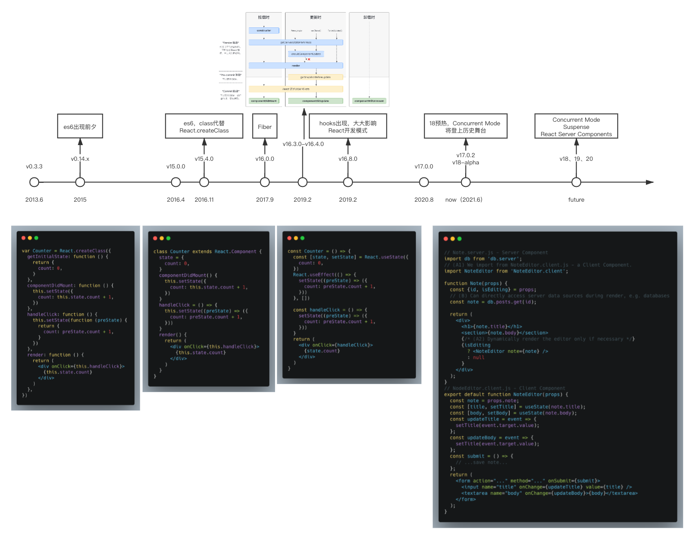

开局一张图，剩下全靠编

React <17
class
关键节点是 2015 年，es6 的诞生。在此之前 React 组件均是通过 React.createClass 创建，之后则可以直接用 es6 语法 extends Component 实现。从 15 年开始至今，class component 的写法深入人心，目前还占据主流地位。由此衍生出 HOC（代替原先的 mixin）、render props 等操作。
FIber
底层大重构，为未来做铺垫。reconcilers是 react 对于不同平台（React DOM、React Native）的通用逻辑的抽离。协调算法会控制 React 的更新、生命周期等通用过程。Stack Reconciler时代的 React 对于挂载或者更新均需要递归遍历所有组件，触发变更。更新一旦开始就无法终止。Fiber Reconciler对于每个 react component 结点抽象出 fiber 结构，用二叉树连接整个 virtual dom。引入优先级概念，把原本递归的过程变成遍历的过程，中间可被中断。当然至今（2021.6）为止中断的开关还未被打开，目前称为 legacy mode 的状态虽然用了 fiber 结构但还是无法打断任务。react18 将正式开放 concurrent mode，展现 fiber 的完整能力。
lifecycle
Fiber 架构下的必然情况。对于可被中断的低优先任务，打断后再执行就是从头开始，所以必然会导致相关生命周期被多次执行，所以加上了 unsafe 标记。同时补充了额外的生命周期函数，用于弥补可被中断情况下的一些行为。（getDerivedStateFromProps 也是在 render 阶段的生命周期函数，所以也会被执行多次，但是它拿不到 this）
hooks
又一个革命性变更，让 function component 真正被重视（而不是原本作为 class component 附属）hooks 让 FC 有了组件完整的能力，也使逻辑复用更加容易。
React 17
总所周知，react17 最大的新特性是没有新特性~ 然后看一眼changelog可以往下滚好久…
jsx 转换
在之前的版本 jsx 会被编译成 React.createElement 的调用，所以即使代码中没用到 React 也需要导入。17 之后则编译成了 jsx(xxx)的函数调用，并且自动会帮助引入 jsx 的函数，所以如果代码中没有用上 React 就真的不需要导入啦
1 | import React from 'react' |
关于 jsx 函数相对于 React.createElement 的额外改动可以看这个 rfc
事件委托挂载点变更
看图 ↓ 一般来说对业务开发没影响，甚至方便了多个 React root 的操作。但是如果用了原生的 addEventlistener 就可能出问题。

去除事件池
17 之前 React 使用事件池，事件执行完毕会回收，所以某些异步行为就拿不到 e.target.value 了
1 | function handleChange(e) { |
useEffect 清理函数异步执行
值得注意的是，异步执行清理函数可能会导致的问题就是调用清理函数时某些 ref 的值可能已经发生变更。硬是要同步，用 useLayoutEffect
1 | useEffect(() => { |
expirationTime 替换成 lanes(其实 v16.14.0 就换了)
为了解决 Suspence 会阻塞其他任务的问题。（expirationTime 不能精确控制任务，只是笼统的一个大于某个时间任务全部更新。改造起来比较麻烦，lane 模型就只是用一个 31 位的数来控制优先级，优先级全部用位运算来处理。可以做到更细颗粒度的控制）
具体看这里
React 18(alpha)
1 | const container = document.getElementById('root') |
虽然 Fiber、调度、并发渲染已经算是很老的概念了，但是这个模型的威力在 18 版本才开始展现出来。React 团队用两年时间改造（重写）了 Stack Reconciler 至 Fiber Reconciler 现在终于能用了 😏
Automatic Batching
batchedUpdates：批处理更新，总所周知，事件里面多次 setState 会合并到一起执行，这就是批处理。React 在 18 之前只有事件回调和生命周期函数内部会启动批处理，其他的地方不会比如原生事件（addEventListener）、异步行为（setTimeout、Promise）
原因很简单，React 在执行事件前设置了上下文，执行后又重置了，所以异步行为发生时上下文已经不是批处理得了。至于自己绑定的事件，它不归 React 管，连设置那一步都没有…
1 | export function batchedUpdates<A, R>(fn: (A) => R, a: A): R { |
那 18 如何实现 Automatic Batching 呢？直接不用 BatchedContext 就行了。他在第一次触发后记录 lanes，后续多次触发发现 lanes 一样就不管，lanes 不一样就调度。最后过一段时间后会执行更新。（“一段时间”由优先级决定）
CM(Concurrent Mode)
只有在 18 才开放ReactDOM.createRootapi，用于开启Concurrent Mode，而原本的ReactDOM.render也同样保留（他的行为和原本完全一致）。Concurrent Mode 最大的区别就是任务可被打断。
1 | // performSyncWorkOnRoot会调用该方法 |
显而易见，只是多了一个 shouldYield 的判定
Streaming SSR
新 api：pipeToNodeWritable。增强了 SSR 的能力，原先需要获取完整内容后通过 renderToString 实现，现在支持数据延时获取，组件懒加载（结合 Suspense）
New APIs
-
效果：标记回调函数为低优先级更新，对于 Slow rendering 和 Slow network 可以考虑使用，类似官方帮我们维护 loading 了。
1
2
3
4
5
6
7
8
9
10import { startTransition, useTransition } from 'react'
const App = () => {
const [isPending, startTransition] = useTransition({ timeoutMs: 2000 })
// 用hook的会透出一个pedding状态，不需要的话可以直接用React暴露的startTransition
startTransition(() => {
setSearchQuery(input)
})
return <span>{isPending ? ' Loading...' : null}</span>
}1
2
3
4
5
6
7
8
9
10
11
12
13
14
15// 伪代码，只是开启一个标记而已。代码均为同步执行，这个标记降低了任务的优先级
let isInTransition = false
function startTransition(fn) {
isInTransition = true
fn()
isInTransition = false
}
function setState(value) {
stateQueue.push({
nextState: value,
isTransition: isInTransition,
})
} useDeferredValue
相当于官方 debounce，值得注意的是 timeoutMs 并不是延时多久触发而是最长延时。如果组件性能好的话这个延时几乎可以忽略（所以并不能替代 debonce 本身）。使用场景是对于复杂组件渲染导致影响了输入的交互，可以适当延时渲染保证输入的流畅性（某种程度上牺牲一致性）另外，这个 api 某种程度上是对上面那个的补充，几乎可以用上面那个实现同样功能
1
2
3
4
5
6
7
8
9
10
11
12
13
14function App() {
const [text, setText] = useState('hello')
const deferredText = useDeferredValue(text, { timeoutMs: 2000 })
return (
<div className="App">
{/* Keep passing the current text to the input */}
<input value={text} onChange={handleChange} />
...
{/* But the list is allowed to "lag behind" when necessary */}
<MySlowList text={deferredText} />
</div>
)
}Suspense
这玩意大家比较熟就不多说了，18 增加了 SSR 的 Suspense 能力（需要新的 SSR api 才能支持）
1
2
3
4
5
6
7
8
9import { lazy } from 'react'
const Comments = lazy(() => import('./Comments.js'))
// ...
;<Suspense fallback={<Spinner />}>
<Comments />
</Suspense>
RFC
请求意见稿（英语：Request for Comments，缩写：RFC），又翻译作意见征求，意见请求，请求评论[1]是由互联网工程任务组（IETF）发布的一系列备忘录。文件收集了有关互联网相关信息，以及UNIX和互联网社区的软件文件，以编号排定。目前RFC文件是由互联网协会（ISOC）赞助发行。
以上是维基百科定义的 RFC。现在广义的 RFC 更倾向于类似“js 提案”的概念，由开发团队或者协作维护者发起的对于一项有重大影响的变更的文档说明，开放给社区讨论，大家一起头脑风暴完善这个“提案”（采纳或否定由开发组决定）
React Server Components
RSC 基本思路某种意义上可以类比 HMR（热更新），只不过 HMR 是服务端检测到文件变更后主动把变更后的 chunk 发送客户端，RSC 是触发某些交互后请求服务端，由服务端执行具体的逻辑，最后把渲染完的组件 chunk 发送到客户端再由客户端启动更新。这样的好处是显而易见的，组件可以保存状态，同时减轻浏览器压力（当然相当于压力转移到了服务端），还能减小包体积。
描述：RFC: React Server Components
讨论：(PR)RFC: React Server Components
1 | // NodeEditor.client.js - Client Component |
所以，跟 SSR 的区别是什么？
- SSR 是在 Server 进行渲染，然后把渲染得到的 HTML 返回给 Client；而这个 Server Component，所有组件，不管 Server 组件还是 Client 组件，都是在 Client 进行渲染。只不过 Server 组件会自带一些在 Server 端获取的数据放在 props 里，这样就不用在 Client 再进行请求了。
- SSR 因为每个请求都是一个新的 HTML，就相当于两个应用，你的应用都变了，那你原来应用里的状态肯定都丢了；但是 Server Component 不管你向 Server 请求多少次，都是同一个 HTML，同一个应用，你的状态不会丢。
如何结合使用？
你会发现，使用 Server Component 是完全没法 SEO 的，因为 Server 返回的不是 HTML。其实官方也提过，我们可以结合起来用：
- 我们的首页请求 Server 的/路径，这个路径对应的是 SSR 渲染
- Client 拿到 SSR 返回 HTML 后，后续的组件，请求 Server 的/component 路径，这个路径对应的是 Server Component
作者：达达 XxjzZ
链接：https://www.zhihu.com/question/435921124/answer/1641235418
来源：知乎
著作权归作者所有。商业转载请联系作者获得授权，非商业转载请注明出处。
END

参考文章
React v17.0 Release Candidate: No New Features
React 18 Is Out! This Is What You Need to Know
Concurrent UI Patterns (Experimental)
Real world example: adding startTransition for slow renders
New Suspense SSR Architecture in React 18
The Future of React: Server Components